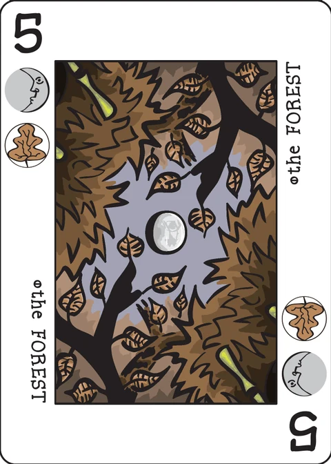

Soliterrapin
a tableau-building solitaire game that uses the scoring rules of Terrapin
| Designed by | Mike Arlington |
|---|---|
| Players | 1 |
| Length | ? |
| Extra material | None |
Setup
Soliterrapin uses only the basic Decktet, so you can put aside your pawns and courts.
Begin the game, oddly enough, by shuffling the cards.
Game play
Once you're done, flip the top card from the Decktet and place it on your table/floor/counter/what-have-you. Congratulations! You've just completed your first turn of Soliterrapin!
For your second turn you will once again flip the top card of the Decktet. You may place this card in any space adjacent to any other card already in the tableau (which will currently be the only card on the table). The card does NOT need to be played next to another card that shares a suit, has the same number, or any other restriction. As long as it is adjacent to another card in the tableau, you are good to go! The town that Soliterrapin was created in has never heard of diagonals however, so those are right out. Please stick to the cardinal directions.
Continue taking turns in this fashion until you have six cards in either a straight row or column. Once this occurs, the playfield in that direction has been set and may not be expanded any further. If you're familiar with Thricewise, you should know how this works. If not, just know that the game will be completely contained in a 6x6 grid when you are complete. The first card you played may be the center, a corner, on a side, or anywhere else in this grid.
Once you have all the cards in the Decktet on your playing surface, it is time to score the game. Oh, wait. Did you make any rows or columns that are Turtle Butt? Turtle Butt is a row or column that has all six Decktet suits represented. If this happens, I'm afraid that row or column is worth ZERO points. It's harsh, I know, but it was probably your fault so don't blame me.
So with the exception of any Turtle Butt rows or columns, you might be asking yourself, how do I score all these other columns? Well, scoring in Soliterrapin works just like scoring in Terrapin, if you consider each row and column to be its own Terrapin hand:
- Pairs are worth 5 points. If you have a pair of Aces or Crowns, each additional Ace (if you have a pair of Aces) or Crown (if you have a pair of Crowns) in the row is worth an additional 5 points. This means that three-of-a-kind is worth 10 points, four-of-a-kind is 15 points, five-of-a-kind is 20 points, and six-of-a-kind is Turtle Butt. Also, any three of a kind that is not Aces or Crowns will result in Turtle Butt, as all 6 suits will have been represented. Pairs (and 3 or more of a kind for that matter), do not need to be placed next to each other. As long as the pair exists anywhere in the row or column, it counts.
- Straights are worth 2 points for every card after the first. This means a two card straight is 2 points, and a 6 card straight is 10 points. It is important to note that the cards to form a straight may be played in ANY ORDER. Additionally, only the longest straight in a row or column gets scored. In case of a tie, score either one. For example, playing your cards like such in a row: 4-6-5-3-8-9 will be worth 6 points. That is for the four card straight (3-4-5-6). There is a two card straight (8-9) but it is not worth anything because of the longer straight that exists in the hand. In regards to straight scoring, Aces are considered 1's and Crowns are considered 10's.
And that is all there is to Soliterrapin!
The extended deck
No pawns or courts are used. There is also no Excuse.
Variants
- A game using only the first 25 cards in a 5x5 grid, but the devisor feels it ends up being too easy.
- The last three cards of the deck are all seen at the same time and placed in any order. While this can probably stop Turtle Butt from happening most of the time, it seems like a weird fringe case in the rules.
- A previous version required that straights be played in order (ascending or descending).
- In a previous version, Turtle Butt was a complete loss, not merely a loss in a column.
Note on this implementation
The grid is drawn up front. The wiki has you place cards freely on a table that ends up "completely contained in a 6x6 grid", with the first card landing "the center, a corner, on a side, or anywhere else in this grid". This app draws that 6x6 grid and lets you put the first card in any of its 36 squares; every later card must go on a free square that touches a placed card straight up, down, left or right — never diagonal. A row or column that holds six cards is sealed simply by being full.
A card counts for each of its suits when Turtle Butt is decided, since numbered cards bear two suits each. That also makes the wiki's remark automatic: the three cards of any rank 2–9 split the six suits between them, so any three-of-a-kind of a numbered rank is a Turtle Butt line.
Pairs score 5 × (count − 1) for each rank, which reproduces every figure the wiki gives (pair 5, three-of-a-kind 10, four-of-a-kind 15, five-of-a-kind 20); different ranks pair separately.
The straight is the longest run of consecutive ranks present in the line (Aces 1, Crowns 10, no wrap). Repeated ranks never extend it, and only the longest run scores — a tie is worth the same either way. The app also scores each card in both its row and its column, as "each row and column … its own Terrapin hand" implies.
The score panel is live. Incomplete lines are scored as they build, so a preview total can drop when a line fills in with its sixth card and turns into Turtle Butt. Tap any chip to see how that row or column scores.
Credits
Soliterrapin was devised by Mike Arlington for the 2012 Solitaire PnP Contest at BoardGameGeek. These rules were posted by Mike to BGG and transcribed to the Decktet wiki with permission, with some minor edits to fit the wiki format.
These rules are copied from the Soliterrapin page of the Decktet wiki (page revision 1, 13 February 2018) so they can be read offline, under the wiki's CC BY-NC-SA 3.0 licence. Cards by P.D. Magnus, same licence.
Further reading: Soliterrapin at BoardGameGeek.